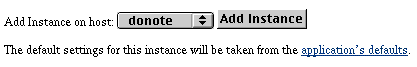
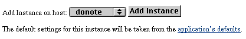

The application's Detail View page is then displayed:

A new page appears that gives you a choice of hosts to add your instance to.

Unless you previously configured hosts in Monitor, there should only be one item in the pop-up menu.
 Table of Contents
Table of Contents  Previous Section
Previous Section
The application's Detail View page is then displayed:
A new page appears that gives you a choice of hosts to add your instance to.

Unless you previously configured hosts in Monitor, there should only be one item in the pop-up menu.
When you use Monitor to add an application or an instance, or indeed to change any setting, you are creating or updating the public configuration file NEXT_ROOT/Library/WebObjects/Configuration/WebObjects.conf. The presence of this file tells the adaptor to do load balancing across multiple instances. See "Configuration Files" for more information on WebObjects.conf.
Table of Contents  Next Section
Next Section